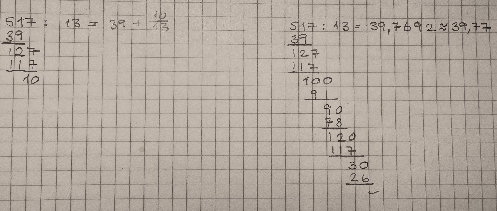

Nullpunktsetningen og polynomdivisjon
Contents
Nullpunktsetningen og polynomdivisjon¶
Her sjal vi se på polynomdivisjon og hvordan vi kan dividere et polynom med et annet.
Målet er at du skal kunne
utføre polynomdivisjon
kjenne til algoritmen for polynomdivisjon
vite hva nullpunktsetningen er
kunne finne en faktor til et polynom
Dividere to tall¶
Tidligere har du nok gjennomført flere delingsoppgaver. Kanskje er det lenge siden og du har glemt hvordan du gjør det?
Nå når vi skal dividere polynomer vil du få bruk for samme tankegang som ved divisjon av to tall. Her kan du se hvordan en elev har gjennomført en divisjon og funnet to forskjellige måter å skrive svaret

Bruk litt tid og repeter hva denne eleven har gjort.
Hvorfor fungerer denne framgangsmåten?
Hvordan fant eleven svaret skrevet som et blandet tall?
Etter at du har tenkt på det kan du fortsette.
Introduksjon til polynomdivisjon¶
Nå skal du se en film som gir en introduksjon til polynomdivisjon. Filmen vil også vise sammenhengen mellom polynomdivisjon og den typen divisjon du tidligere har gjort.
Oppgave 1
Nå kan du prøve deg på en enkel polynomdivisjon. Løs oppgaven
Løsning
Her kan vi se at divisjonen gikk opp. Det ble ingen rest!
Legg også merke til at vi nå kan faktorisere slik at polynomet kan skrives som
En slik faktorisering er et nyttig resultat av polynomdivisjon.
Forklaring av polynomdivisjon¶
Da har du prøvd deg på en polynomdivisjon og sett noen eksempler på framgangsmåten. Hvorfor fungerer metoden?
I filmen under får du en forklaring på hvorfor algoritmen vi brukte for å utføre polynomdivisjon fungerer.
Snart skal du få se en film som viser flere eksempler på polynomdivisjon. Før du ser filmen kan det være lurt om du prøver på de samme eksemplene.
Disse oppgavene vil du få en forklaring på
Nå kan du prøve deg på disse oppgavene.
Tips: Det kan være lurt å skrive om den siste oppgaven som
Flere eksempker¶
Her kommer en film med flere eksempler på polynomdivisjon
Nullpunkt gir faktorisere¶
Når vi skal utføre en polynomdivisjon er det nyttig å vite om divisjonen går opp. I denne filmen skal du se at hvis vi kan finne nullpunkt til et polynom så vet vi også en faktor i polynomet. Det betyr at vi vet at divisjonen må gå opp.
Nullpunktsetningen¶
Resultatet vi kom fram til i filmen kalles nullpunktsetningen.
Nullpunktsetningen
La \(P(x)\) være et polynom og \(a\) et tall. Da har vi at \(P(x)\) er delelig med \(x−a\) hvis og bare hvis \(P(a)=0\).
Vi kan vise at dette stemmer ved å ta utgangspunkt i et polynom \(P(x)\) og utføre divisjonen \(P(x):(x-a)\). Da får vi
der \(r\) er resten. Det er det samme som at
Nå kan vi multipliserer begge sider med \((x-a)\) og får
Likninga forteller at begge sider skal være like for alle verdier av \(x\). For \(x=a\) har vi
Da kan vi se at \(P(a) =r\). Det betyr at \(P(a)\) alltid vil være det samme som resten. Divisjonen går opp hvis og bare hvis \(r=0\). Det vil si at divisjonen går opp hvis og bare hvis \(P(a)=0\).
Oppgave 2
Prøv deg fram og se om du kan finne et nullpunkt til polynomet
Fant du noen av disse verdiene?
Oppgave 3
Faktoriser polynomet
Hva blir faktorene?
Et sammensatt Eksempel¶
Vi skal nå løse denne oppgaven
Funksjonene \(f\) og \(g\) er gitt ved
Bestem skjæringspunktene mellom grafene til \(f\) og \(g\) ved regning.
Prøv deg på oppgaven.
På neste side vil du kunne se en film som viser hvordan det kan gjøres.